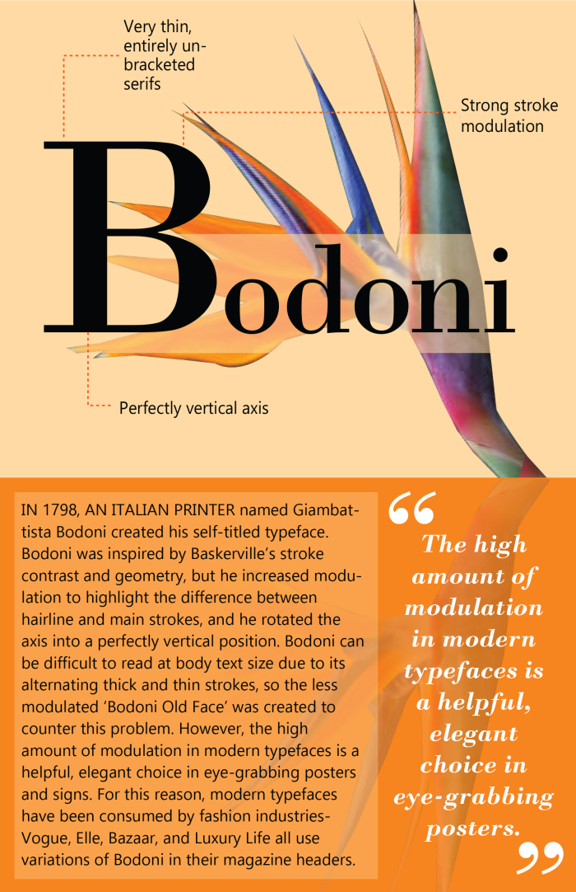
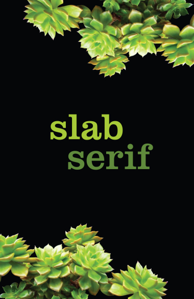
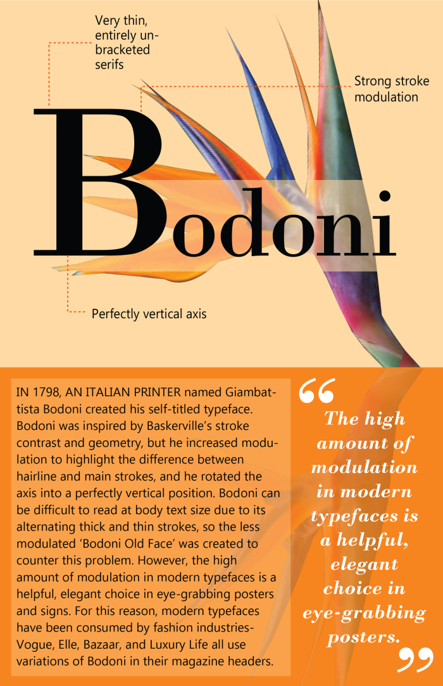
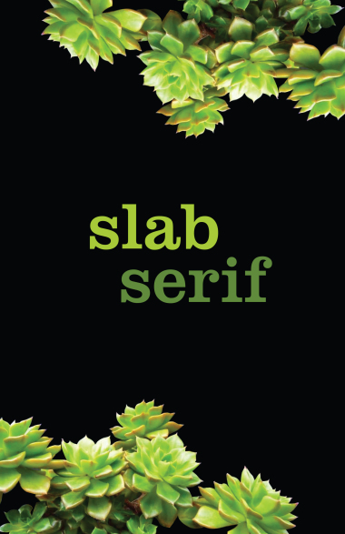

Typography Classication Cards
Made for my Typography 1 class taught by Bonnie Tanaka in Winter 2018

 




Description
To illustrate the differences between some typeface classifications throughout the centuries, I created three typography cards. Each card named a different class (Transitional, Modern, and Slab Serif), and highlighted one typeface representative of the class. Each card features a different secondary color and plant. I chose orange birds of paradise to compliment Bodoni’s sleek, eye-grabbing nature, green cacti to hint at Clarendon’s popularity in the old west, and purple flowers to pair with Georgia’s smooth curves.
Results
After one round of design, I printed mockups for my classmates to critique (pictures above). They advised me to set a uniform height of the bottom paragraph box, keep consistent placement of my enlarged quote, and write the paragraphs in one simple font, rather than in each card’s featured typeface. I implemented their suggestions, which can be seen in the top pictures.
Role
This was a solo project; I was the graphic designer, researcher, and writer.
Software
Adobe Illustrator